Android中插件开发篇之----动态加载Activity(免安装运行程序)
来源:尼古拉斯
一、前言
又到周末了，时间过的很快，今天我们来看一下Android中插件开发篇的最后一篇文章的内容：动态加载Activity(免安装运行程序)，在上一篇文章中说道了，如何动态加载资源(应用换肤原理解析)，没看过的同学，可以转战： http://blog.csdn.net/jiangwei0910410003/article/details/47679843
当然，今天说道的内容还这这篇文章有关系。关于动态加载Activity的内容，网上也是有很多文章介绍了。但是他们可能大部分都是介绍通过代理的方式去实现的，所以今天我要说的加载会有两种方式：
- 1、使用反射机制修改类加载器
- 2、使用代理的方式
这两种方式都有各自的优缺点，我会在后面的文章详细解说。
二、技术介绍
1、第一种方式：使用反射机制修改类加载器来实现动态加载Activity
首先来看一个例子：360安全卫士
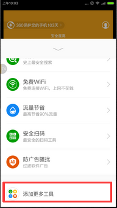
在主界面有一个添加更多工具的菜单，点进去之后，可以看到有很多功能选项。我们添加一个手机防盗的功能：有一个进度条开始添加。那么我们如何知道他是使用动态加载的呢？我们可以去查看他的数据文件目录：

我们可以看到有两个目录，比较见名知意：
第一个目录是存放需要动态加载的功能插件，第二个目录是存放加载之后释放的dex目录。app_plugins_v3
app_plugins_v3_odex
上面分析了360的动态加载Activity功能，下面我们就来实现以下这个功能吧：
不过我们还得了解一下Android中的类加载器的相关知识，这里就不做介绍了：我在这篇文章中详细介绍了类加载器： http://blog.csdn.net/jiangwei0910410003/article/details/41384667
我们知道PathClassLoader是一个应用的默认加载器(而且他只能加载data/app/xxx.apk的文件)，但是我们加载插件一般使用DexClassLoader加载器，所以这里就有问题了，其实如果对于开始的时候，每个人都会认为很简单，很容易想到使用DexClassLoader来加载Activity获取到class对象，在使用Intent启动，这个很简单呀？但是实际上并不是想象的这么简单。原因很简单，因为Android中的四大组件都有一个特点就是他们有自己的启动流程和生命周期，我们使用DexClassLoader加载进来的Activity是不会涉及到任何启动流程和生命周期的概念，说白了，他就是一个普普通通的类。所以启动肯定会出错。
所以我们知道了问题所在，解决起来也就简单了，但是我们这里还有两种思路去解决这个问题：
1) 第一个思路： 替换LoadedApk中的mClassLoader 我们只要让加载进来的Activity有启动流程和生命周期就OK了，所以这里我们需要看一下一个Activity的启动过程。当然这里不会详细介绍一个Activity启动过程的，因为那个太复杂了，而且我也说不清楚，我们知道我们可以将我们使用的DexClassLoader加载器绑定到系统加载Activity的类加载器上就可以了，这个是我们的思路。也是最重要的突破点。下面我们就来通过源码看看如何找到加载Activity的类加载器。加载Activity的时候，有一个很重要的类：LoadedApk.java，这个类是负责加载一个Apk程序的，我们可以看一下他的源码：
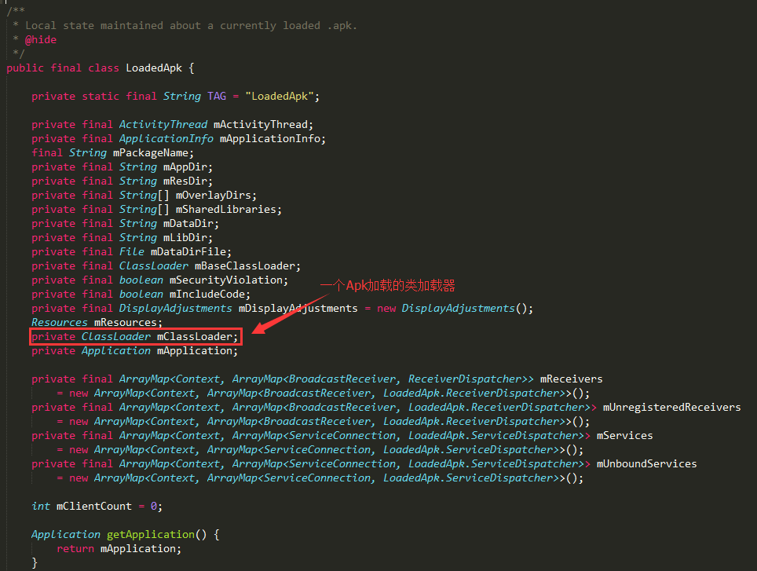
我们可以看到他内部有一个mClassLoader变量，他就是负责加载一个Apk程序的，那么我们只要获取到这个类加载器就可以了。他不是static的，所以我们还得获取一个LoadedApk对象。我们在去看一下另外一个类：ActivityThread.java的源码

这里我们可以看到ActivityThread类中有一个自己的static对象，然后还有一个ArrayMap存放Apk包名和LoadedApk映射关系的数据结构，那么我们分析清楚了，下面就来通过反射来获取mClassLoader对象吧。
友情提示：这里可能有些同学会困惑，怎么能够找到这个mClassLoader呢。我在这里因为是为了讲解内容，所以反过来找这个东西了，其实正常情况下，我们在找关于一个Apk或者是Activity的相关信息的时候，特别是启动流程的时候，我们肯定会去找：ActivityThread.java这个类，这个类是很重要很重要的，也是关键的突破口，它内部其实有很多信息的，所以，我们应该先去找这个ActivityThread,然后从这个类中发现信息，然后会找到了LoadedApk这个类。关于ActivityThread这个类，为何如此重要，我们可以在看看他的源码：
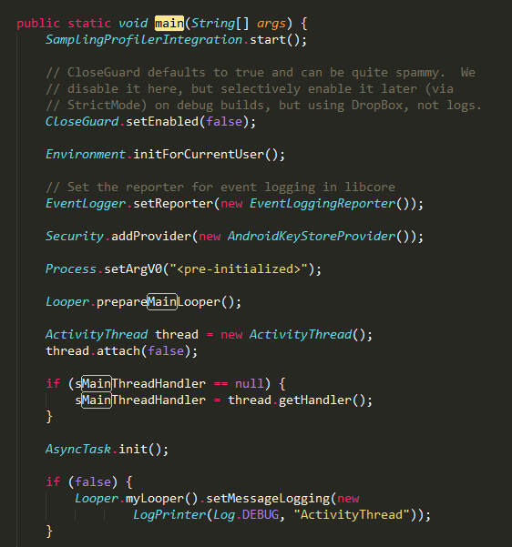
他有这个方法？这个方法看到很熟悉呀？他不是Java程序运行的入口main方法吗？是的，没错，所有的app程序的执行入口就是这里，所以以后有人问你Android中程序运行的入口是哪里？不要再说是Application的onCreate方法了，其实是ActivityThread中的main方法。
好的，回到主干上来，我们现在开始编写代码来实现反射获取mClassLoader类，然后将其替换成我们的DexClassLoader类，不多说了，看一下Demo工程结构：
PluginActivity1 ==》插件工程
DynamicActivityForClassLoader ==》宿主工程
其中PluginActivity1工程很简单啦，就一个Activiity:
package com.example.dynamicactivityapk;
import android.app.Activity;
import android.os.Bundle;
import android.view.View;
import android.view.View.OnClickListener;
import android.widget.Toast;
public class MainActivity extends Activity {
private static View parentView;
@Override
protected void onCreate(Bundle savedInstanceState) {
super.onCreate(savedInstanceState);
if(parentView == null){
setContentView(R.layout.activity_main);
}else{
setContentView(parentView);
}
findViewById(R.id.btn).setOnClickListener(new OnClickListener(){
@Override
public void onClick(View arg0) {
Toast.makeText(getApplicationContext(), "I came from 插件~~", Toast.LENGTH_LONG).show();
}});
}
public static void setLayoutView(View view){
parentView = view;
}
}
我们看到其实这里有一个问题，为何要定义一个setLayoutView的方法，这个我们后面会说道。
我们编译这个工程，得到PluginActivity1.apk程序：
下面来看一下宿主工程
宿主工程其实最大的功能就是加载上面的PluginActivity1.apk，然后启动内部的MainActivity就可以了，这里的核心代码就是如何通过反射替换系统的mClassLoader类：
@SuppressLint("NewApi")
private void loadApkClassLoader(DexClassLoader dLoader){
try{
String filesDir = this.getCacheDir().getAbsolutePath();
String libPath = filesDir + File.separator +"PluginActivity1.apk";
// 配置动态加载环境
Object currentActivityThread = RefInvoke.invokeStaticMethod(
"android.app.ActivityThread", "currentActivityThread",
new Class[] {}, new Object[] {});//获取主线程对象
String packageName = this.getPackageName();//当前apk的包名
ArrayMap mPackages = (ArrayMap) RefInvoke.getFieldOjbect(
"android.app.ActivityThread", currentActivityThread,
"mPackages");
WeakReference wr = (WeakReference) mPackages.get(packageName);
RefInvoke.setFieldOjbect("android.app.LoadedApk", "mClassLoader",
wr.get(), dLoader);
Log.i("demo", "classloader:"+dLoader);
}catch(Exception e){
Log.i("demo", "load apk classloader error:"+Log.getStackTraceString(e));
}
}
这里有一个参数就是需要替换的DexClassLoader的，从外部传递过来，然后进行替换。我们看看外部定义的DexClassLoader类：
String filesDir = this.getCacheDir().getAbsolutePath();
String libPath = filesDir + File.separator +"PluginActivity1.apk";
Log.i("inject", "fileexist:"+new File(libPath).exists());
//loadResources(libPath);
DexClassLoader loader = new DexClassLoader(libPath, filesDir,filesDir, getClassLoader());
下面我们来运行一下这个程序，首先我们将PluginActivity1.apk放到宿主工程的data/data/cache目录下：
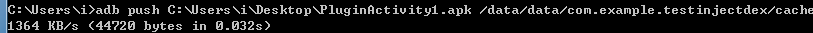
运行程序，点击加载：
运行发现失败，说是插件中的那个MainActivity没有在AndroidManifest.xml中声明？不对呀，我们在插件工程中明明声明了呀，为何他还是提示没有声明呢？
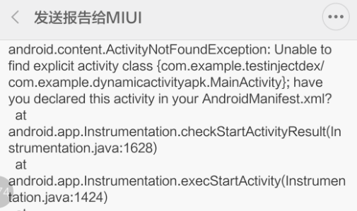
哎，其实仔细想想原因很简单的，因为DexClassLoader加载插件Apk，不会将其xml中的内容加载进来，所以在插件中声明是没有任何用途的，必须在宿主工程中声明：
<activity
android:name="com.example.dynamicactivityapk.MainActivity">
</activity>
我们在运行程序：

我们点击按钮，看效果啦。果然可以加载成功了啦啦啦。很开心了。
不过这里还是需要注意两个问题：
1>、因为要加载插件中的资源，所以需要调用loadResources方法2>、在测试的过程中，发现插件工程中setContentView方法没有效果了。所以就在插件工程中定义一个static的方法，用来提前设置视图的。
2) 第二思路：合并PathClassLoader和DexClassLoader中的dexElements数组
好了，这里就介绍了一个如何使用反射机制来动态加载一个Activity了，但是到这里还没有结束呢？因为还要介绍另外一种方式来设置类加载器。
我们首先来看一下PathClassLoader和DexClassLoader类加载器的父类BaseDexClassloader的源码：
(这里需要注意的是PathClassLoader和DexClassLoader类的父加载器是BootClassLoader,他们的父类是BaseDexClassLoader)
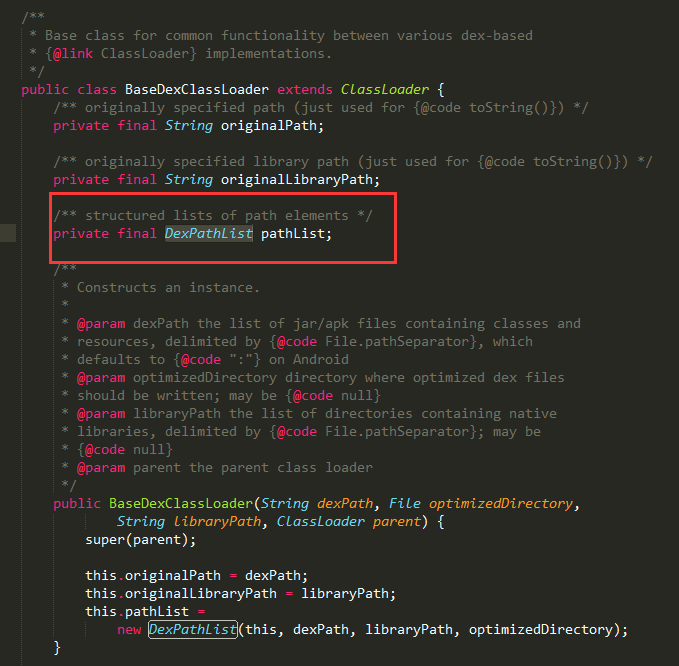
这里有一个DexPathList对象，在来看一下DexPathList.java源码：

首先看一下这个类的描述，还有一个Elements数组，我们看到这个变量他是专门存放加载的dex文件的路径的，系统默认的类加载器是PathClassLoader，本身一个程序加载之后会释放一个dex出来，这时候会将dex路径放到里面，当然DexClassLoader也是一样的，那么我们会想到，我们是否可以将DexClassLoader中的dexElements和PathClassLoader中的dexElements进行合并，然后在设置给PathClassLoader中呢？这也是一个思路。我们来看代码：
/**
* 以下是一种方式实现的
* @param loader
*/
private void inject(DexClassLoader loader){
PathClassLoader pathLoader = (PathClassLoader) getClassLoader();
try {
Object dexElements = combineArray(
getDexElements(getPathList(pathLoader)),
getDexElements(getPathList(loader)));
Object pathList = getPathList(pathLoader);
setField(pathList, pathList.getClass(), "dexElements", dexElements);
} catch (IllegalArgumentException e) {
e.printStackTrace();
} catch (NoSuchFieldException e) {
e.printStackTrace();
} catch (IllegalAccessException e) {
e.printStackTrace();
} catch (ClassNotFoundException e) {
e.printStackTrace();
}
}
private static Object getPathList(Object baseDexClassLoader)
throws IllegalArgumentException, NoSuchFieldException, IllegalAccessException, ClassNotFoundException {
ClassLoader bc = (ClassLoader)baseDexClassLoader;
return getField(baseDexClassLoader, Class.forName("dalvik.system.BaseDexClassLoader"), "pathList");
}
private static Object getField(Object obj, Class<?> cl, String field)
throws NoSuchFieldException, IllegalArgumentException, IllegalAccessException {
Field localField = cl.getDeclaredField(field);
localField.setAccessible(true);
return localField.get(obj);
}
private static Object getDexElements(Object paramObject)
throws IllegalArgumentException, NoSuchFieldException, IllegalAccessException {
return getField(paramObject, paramObject.getClass(), "dexElements");
}
private static void setField(Object obj, Class<?> cl, String field,
Object value) throws NoSuchFieldException,
IllegalArgumentException, IllegalAccessException {
Field localField = cl.getDeclaredField(field);
localField.setAccessible(true);
localField.set(obj, value);
}
private static Object combineArray(Object arrayLhs, Object arrayRhs) {
Class<?> localClass = arrayLhs.getClass().getComponentType();
int i = Array.getLength(arrayLhs);
int j = i + Array.getLength(arrayRhs);
Object result = Array.newInstance(localClass, j);
for (int k = 0; k < j; ++k) {
if (k < i) {
Array.set(result, k, Array.get(arrayLhs, k));
} else {
Array.set(result, k, Array.get(arrayRhs, k - i));
}
}
return result;
}
我们在运行宿主程序，发现发现也是可以的，这里就不演示了，效果都是一样的。 这里总结一下：
我们在使用反射机制来动态加载Activity的时候，有两个思路：
1>、替换LoadApk类中的mClassLoader变量的值，将我们动态加载类DexClassLoader设置为mClassLoader的值2>、合并系统默认加载器PathClassLoader和动态加载器DexClassLoader中的dexElements数组 这两个的思路原理都是一样的：就是让我们动态加载进来的Activity能够具备正常的启动流程和生命周期。
项目下载地址：http://download.csdn.net/detail/jiangwei0910410003/9063377
2、第二种方式来动态加载Activity：静态代理的方式
首先我们也是先来看一个例子：23Code
这个应用的功能就是实时的展示一些开源的UI控件。他是在线下载，然后动态加载进行展示的：


我们看到，点击运行Demo的时候，他会去下载apk,我们看看他的数据目录结构：

这里我们看到了，他把下载之后的apk都用每个插件的功能包名存起来的。
好了，上面分析了23Code的加载机制，我们来看看如何使用代理的方式来动态加载Activity
先来看看原理：
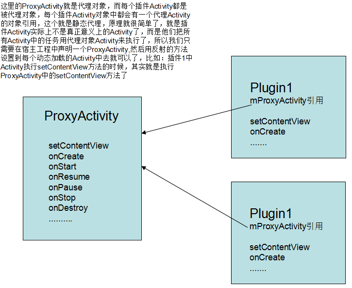
所以说，这种方式来加载Activity的话，其实真正意义上每个插件的Activity都不再是想方式一中的那样，没有生命周期，没有启动流程了，他们就是一个普通的Activity类，然后将其生命周期的所有任务都交给代理Activity去执行就可以了。
下面我们来看一下项目工程：
1、DynamicActivityForProxy ==》宿主工程
2、PluginActivity2 ==》插件工程
看一下插件工程
BaseActivity.java
package com.example.dynamicactivity;
import com.example.dynamicactivity.R;
import android.app.Activity;
import android.os.Bundle;
import android.view.View;
import android.view.View.OnClickListener;
import android.widget.Toast;
public class BaseActivity extends Activity {
protected Activity mProxyActivity;
public void setProxy(Activity proxyActivity) {
mProxyActivity = proxyActivity;
}
@Override
protected void onCreate(Bundle savedInstanceState) {
}
@Override
public void setContentView(int layoutResID) {
if (mProxyActivity != null && mProxyActivity instanceof Activity) {
mProxyActivity.setContentView(layoutResID);
mProxyActivity.findViewById(R.id.btn).setOnClickListener(
new OnClickListener() {
@Override
public void onClick(View v) {
Toast.makeText(mProxyActivity, "我是插件，你是谁!",Toast.LENGTH_LONG).show();
}
});
}
}
}
这里会重写setContentView的方法，同时有一个setProxy方法。
在来看一下MainActivity.java
package com.example.dynamicactivity;
import com.example.dynamicactivity.R;
import android.os.Bundle;
import android.util.Log;
public class MainActivity extends BaseActivity {
@Override
protected void onCreate(Bundle savedInstanceState) {
super.onCreate(savedInstanceState);
setContentView(R.layout.activity_main);
}
@Override
protected void onDestroy() {
//这里需要注意的是，不能调用super.onDestroy的方法了，不然报错，原因也很简单，这个Activity实质上不是真正的Activity了，没有生命周期的概念了，调用super的方法肯定报错
Log.i("demo", "onDestory");
}
@Override
protected void onPause() {
Log.i("demo", "onPause");
}
@Override
protected void onResume() {
Log.i("demo", "onResume");
}
@Override
protected void onStart() {
Log.i("demo", "onStart");
}
@Override
protected void onStop() {
Log.i("demo", "onStop");
}
}
这里打印一下生命周期中的每个方法，待会需要验证。
注意：这里的生命周期方法不能再调用super.XXX方法了，否则会报错的，原因很简单啦。插件Activity不在是真正意义上的Activity了，就是一个空壳的Activity。所以调用的话，肯定会出错
运行插件工程，得到一个PluginActivity2.apk
下面来看一下宿主工程：
首先我们来看一下重要的代理对象ProxyActiviity
package com.example.dynamic.activity;
import java.io.File;
import java.lang.reflect.Constructor;
import java.lang.reflect.Method;
import java.util.HashMap;
import android.annotation.SuppressLint;
import android.app.Activity;
import android.os.Bundle;
import android.util.Log;
import dalvik.system.DexClassLoader;
public class ProxyActivity extends BaseActivity {
private Object pluginActivity;
private Class<?> pluginClass;
private HashMap<String, Method> methodMap = new HashMap<String,Method>();
@SuppressLint("NewApi")
@Override
protected void onCreate(Bundle savedInstanceState) {
super.onCreate(savedInstanceState);
try {
DexClassLoader loader = initClassLoader();
//动态加载插件Activity
pluginClass = loader.loadClass("com.example.dynamicactivity.MainActivity");
Constructor<?> localConstructor = pluginClass.getConstructor(new Class[] {});
pluginActivity = localConstructor.newInstance(new Object[] {});
//将代理对象设置给插件Activity
Method setProxy = pluginClass.getMethod("setProxy",new Class[] { Activity.class });
setProxy.setAccessible(true);
setProxy.invoke(pluginActivity, new Object[] { this });
initMethodMap();
//调用它的onCreate方法
Method onCreate = pluginClass.getDeclaredMethod("onCreate",
new Class[] { Bundle.class });
onCreate.setAccessible(true);
onCreate.invoke(pluginActivity, new Object[] { new Bundle() });
} catch (Exception e) {
Log.i("demo", "load activity error:"+Log.getStackTraceString(e));
}
}
/**
* 存储每个生命周期的方法
*/
private void initMethodMap(){
methodMap.put("onPause", null);
methodMap.put("onResume", null);
methodMap.put("onStart", null);
methodMap.put("onStop", null);
methodMap.put("onDestroy", null);
for(String key : methodMap.keySet()){
try{
Method method = pluginClass.getDeclaredMethod(key);
method.setAccessible(true);
methodMap.put(key, method);
}catch(Exception e){
Log.i("demo", "get method error:"+Log.getStackTraceString(e));
}
}
}
@SuppressLint("NewApi")
private DexClassLoader initClassLoader(){
String filesDir = this.getCacheDir().getAbsolutePath();
String libPath = filesDir + File.separator +"PluginActivity2.apk";
Log.i("inject", "fileexist:"+new File(libPath).exists());
loadResources(libPath);
DexClassLoader loader = new DexClassLoader(libPath, filesDir,null , getClass().getClassLoader());
return loader;
}
@Override
protected void onDestroy() {
super.onDestroy();
Log.i("demo", "proxy onDestroy");
try{
methodMap.get("onDestroy").invoke(pluginActivity, new Object[]{});
}catch(Exception e){
Log.i("demo", "run destroy error:"+Log.getStackTraceString(e));
}
}
@Override
protected void onPause() {
super.onPause();
Log.i("demo", "proxy onPause");
try{
methodMap.get("onPause").invoke(pluginActivity, new Object[]{});
}catch(Exception e){
Log.i("demo", "run pause error:"+Log.getStackTraceString(e));
}
}
@Override
protected void onResume() {
super.onResume();
Log.i("demo", "proxy onResume");
try{
methodMap.get("onResume").invoke(pluginActivity, new Object[]{});
}catch(Exception e){
Log.i("demo", "run resume error:"+Log.getStackTraceString(e));
}
}
@Override
protected void onStart() {
super.onStart();
Log.i("demo", "proxy onStart");
try{
methodMap.get("onStart").invoke(pluginActivity, new Object[]{});
}catch(Exception e){
Log.i("demo", "run start error:"+Log.getStackTraceString(e));
}
}
@Override
protected void onStop() {
super.onStop();
Log.i("demo", "proxy onStop");
try{
methodMap.get("onStop").invoke(pluginActivity, new Object[]{});
}catch(Exception e){
Log.i("demo", "run stop error:"+Log.getStackTraceString(e));
}
}
}
这里主要就是：
1、加载插件Activity
2、使用反射将代理对象设置给插件Activity
3、测试插件Activity中的生命周期方法
运行程序，我们将上面的PluginActivity2.apk放到宿主程序的cache目录下

运行：
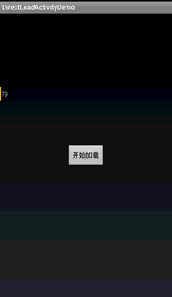
也是成功了，看到效果啦啦，同时我们打印一下Log日志：

插件Activity的每个生命周期的方法也是都执行了。
到这里我们就讲解完了使用代理的方式来实现动态加载Activity。这种方式其实还是很简单的。
项目下载地址：http://download.csdn.net/detail/jiangwei0910410003/9063483
总算是讲完了，累死了，两种方式各有千秋，各有各的好处。
三、案例分析
上面讲解的两种方式的时候，介绍了两个例子：一个是360卫士，一个是23Code
为什么要用这两个例子呢？原因下载说明一下啦：
1、首先来看一下360卫士，我们打开它的一个辅助功能：
使用：adb shell dumpsys activity top
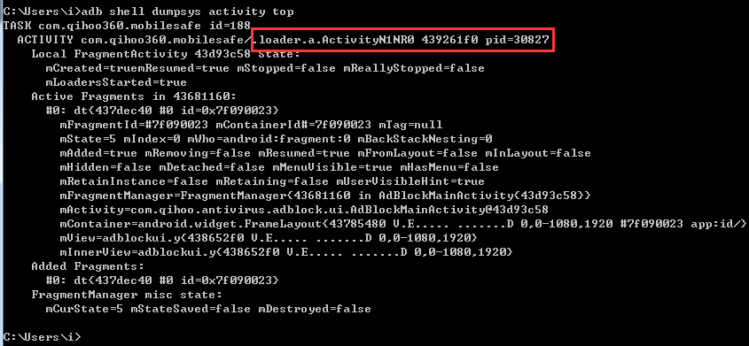
我们再来看一下他的AndroidManifest.xml内容：
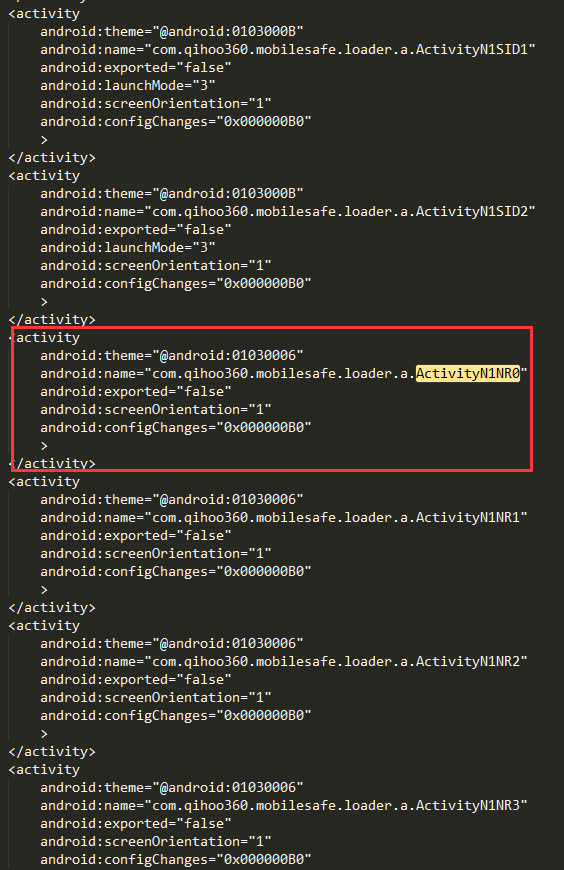
我们可以看到，他在宿主工程中声明了，而且我们会看到有很多个辅助功能都声明了。所以我们断定他使用的是第一种方式去实现动态加载的，所以我们可以看到这种方式有一个不好就是：需要在宿主工程中声明很多个插件Activity。
2、在来看一下23Code应用
运行一个例子之后，我们看到他的Activity是TestActivity

我们再去切换另外一个例子运行之后，也是发现还是这个TestActivity。看看他的AndroidManifest.xml
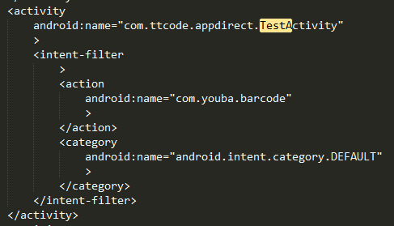
那么我们断定，这个TestActivity就是一个代理的Activity,他使用的是第二种方式来实现动态加载的。 现在知道为何我开始的时候为什么用这两个例子来说明了吧。
四、两种方式的比较
第一种方式：使用反射机制来实现
优点：可以不用太多的关心插件中的Activity的生命周期方法，因为他加载进来之后就是一个真正意义上的Activity了
缺点：需要在宿主工程中进行声明，如果插件中的Activity多的话，那么就不灵活了。
第二种方式：使用代理机制来实现
优点：不需要在宿主工程中进行声明太多的Activity了，只需要有一个代理Activity的声明就可以了，很灵活
缺点：需要管理手动的去管理插件中Activity的生命周期方法，难度复杂。
五、存在的问题
我们看到上面讲到的两种方式去动态加载Activity,其实两种方式都还存在很多问题：
1、其他组件的动态加载问题(服务，广播，ContentProvier)
2、跨进程访问的问题
六、总结
这篇文章讲完之后，那么插件开发篇的三部曲就算结束了，Android中的插件开发也算是有一个好的总结了，也是讲解了现在主流市场中加载的原理和机制。当然我们在真正的使用过程中还会存在很多问题，当然这个就需要我们自己去探索和解决了。
(PS：两种方式的项目下载地址都在上面给出了，如果在运行的过程中有什么问题的话，请留言。能帮就尽量帮助解决一下~~)